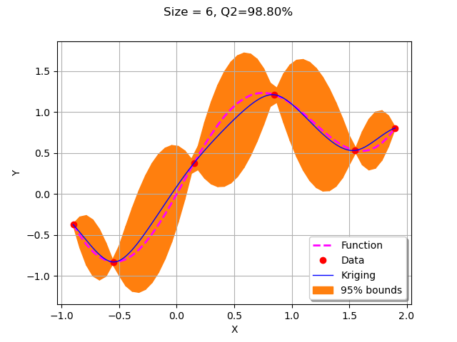
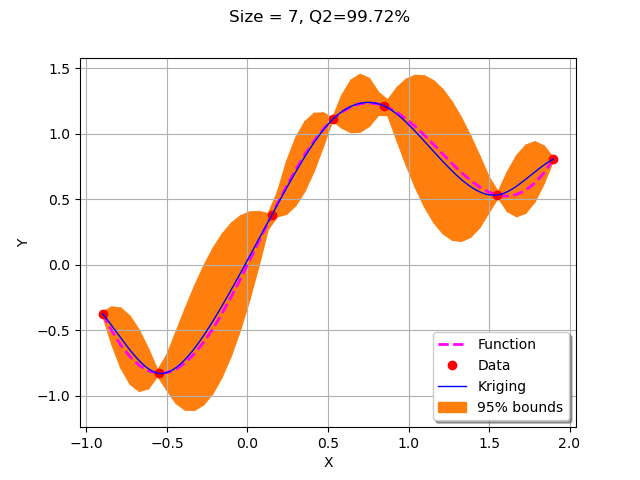
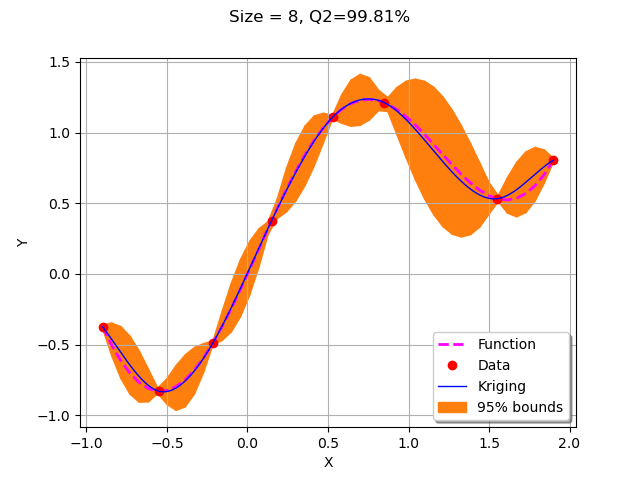
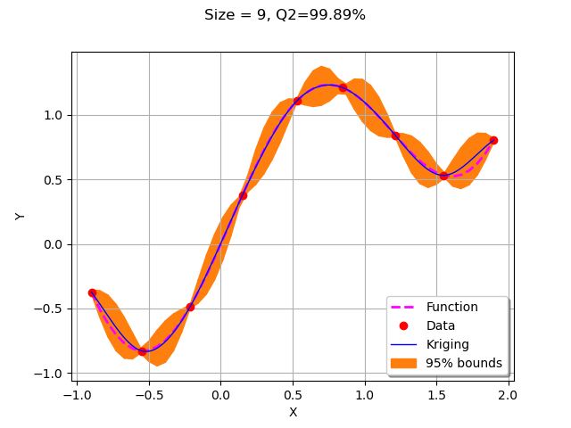
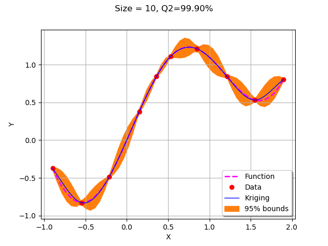

Note
Click here to download the full example code
Sequentially adding new points to a kriging¶
In this example, we show how to sequentially add new points to a kriging in order to improve the predictivity of the metamodel. In order to create simple graphics, we consider a 1D function.
Create the function and the design of experiments¶
import openturns as ot
from openturns.viewer import View
import numpy as np
import openturns.viewer as viewer
from matplotlib import pylab as plt
ot.Log.Show(ot.Log.NONE)
sampleSize = 4
dimension = 1
Define the function.
g = ot.SymbolicFunction(['x'], ['0.5*x^2 + sin(2.5*x)'])
Create the design of experiments.
xMin = -0.9
xMax = 1.9
X_distr = ot.Uniform(xMin, xMax)
X = ot.LHSExperiment(X_distr, sampleSize, False, False).generate()
Y = g(X)
graph = g.draw(xMin, xMax)
data = ot.Cloud(X, Y)
data.setColor("red")
graph.add(data)
view = viewer.View(graph)
Create the algorithms¶
def createMyBasicKriging(X, Y):
'''
Create a kriging from a pair of X and Y samples.
We use a 3/2 Matérn covariance model and a constant trend.
'''
basis = ot.ConstantBasisFactory(dimension).build()
covarianceModel = ot.MaternModel([1.0], 1.5)
algo = ot.KrigingAlgorithm(X, Y, covarianceModel, basis)
algo.run()
krigResult = algo.getResult()
return krigResult
def linearSample(xmin, xmax, npoints):
'''Returns a sample created from a regular grid
from xmin to xmax with npoints points.'''
step = (xmax-xmin)/(npoints-1)
rg = ot.RegularGrid(xmin, step, npoints)
vertices = rg.getVertices()
return vertices
def plot_kriging_bounds(vLow, vUp, n_test):
'''
From two lists containing the lower and upper bounds of the region,
create a PolygonArray.
'''
palette = ot.Drawable.BuildDefaultPalette(2)
myPaletteColor = palette[1]
polyData = [[vLow[i], vLow[i+1], vUp[i+1], vUp[i]]
for i in range(n_test-1)]
polygonList = [ot.Polygon(
polyData[i], myPaletteColor, myPaletteColor) for i in range(n_test-1)]
boundsPoly = ot.PolygonArray(polygonList)
boundsPoly.setLegend("95% bounds")
return boundsPoly
The following sqrt function will be used later to compute the standard deviation from the variance.
sqrt = ot.SymbolicFunction(["x"], ["sqrt(x)"])
def plotMyBasicKriging(krigResult, xMin, xMax, X, Y, level=0.95):
'''
Given a kriging result, plot the data, the kriging metamodel
and a confidence interval.
'''
samplesize = X.getSize()
meta = krigResult.getMetaModel()
graphKriging = meta.draw(xMin, xMax)
graphKriging.setLegends(["Kriging"])
# Create a grid of points and evaluate the function and the kriging
nbpoints = 50
xGrid = linearSample(xMin, xMax, nbpoints)
yFunction = g(xGrid)
yKrig = meta(xGrid)
# Compute the conditional covariance
epsilon = ot.Sample(nbpoints, [1.e-8])
conditionalVariance = krigResult.getConditionalMarginalVariance(
xGrid)+epsilon
conditionalSigma = sqrt(conditionalVariance)
# Compute the quantile of the Normal distribution
alpha = 1-(1-level)/2
quantileAlpha = ot.DistFunc.qNormal(alpha)
# Graphics of the bounds
epsilon = 1.e-8
dataLower = [yKrig[i, 0] - quantileAlpha * conditionalSigma[i, 0]
for i in range(nbpoints)]
dataUpper = [yKrig[i, 0] + quantileAlpha * conditionalSigma[i, 0]
for i in range(nbpoints)]
# Coordinates of the vertices of the Polygons
vLow = [[xGrid[i, 0], dataLower[i]] for i in range(nbpoints)]
vUp = [[xGrid[i, 0], dataUpper[i]] for i in range(nbpoints)]
# Compute the Polygon graphics
boundsPoly = plot_kriging_bounds(vLow, vUp, nbpoints)
boundsPoly.setLegend("95% bounds")
# Validate the kriging metamodel
mmv = ot.MetaModelValidation(xGrid, yFunction, meta)
Q2 = mmv.computePredictivityFactor()[0]
# Plot the function
graphFonction = ot.Curve(xGrid, yFunction)
graphFonction.setLineStyle("dashed")
graphFonction.setColor("magenta")
graphFonction.setLineWidth(2)
graphFonction.setLegend("Function")
# Draw the X and Y observed
cloudDOE = ot.Cloud(X, Y)
cloudDOE.setPointStyle("circle")
cloudDOE.setColor("red")
cloudDOE.setLegend("Data")
# Assemble the graphics
graph = ot.Graph()
graph.add(boundsPoly)
graph.add(graphFonction)
graph.add(cloudDOE)
graph.add(graphKriging)
graph.setLegendPosition("bottomright")
graph.setAxes(True)
graph.setGrid(True)
graph.setTitle("Size = %d, Q2=%.2f%%" % (samplesize, 100*Q2))
graph.setXTitle("X")
graph.setYTitle("Y")
return graph
We start by creating the initial kriging metamodel on the 4 points in the design of experiments.
krigResult = createMyBasicKriging(X, Y)
graph = plotMyBasicKriging(krigResult, xMin, xMax, X, Y)
view = viewer.View(graph)
Sequentially add new points¶
The following function is the building block of the algorithm. It returns a new point which maximizes the conditional variance.
def getNewPoint(xMin, xMax, krigResult):
'''
Returns a new point to be added to the design of experiments.
This point maximizes the conditional variance of the kriging.
'''
nbpoints = 50
xGrid = linearSample(xMin, xMax, nbpoints)
conditionalVariance = krigResult.getConditionalMarginalVariance(xGrid)
iMaxVar = int(np.argmax(conditionalVariance))
xNew = xGrid[iMaxVar, 0]
xNew = ot.Point([xNew])
return xNew
krigingStep = 0
We first call getNewPoint to get a point to add to the design of experiments.
xNew = getNewPoint(xMin, xMax, krigResult)
xNew
Then we evaluate the function on the new point and add it to the training design of experiments.
yNew = g(xNew)
X.add(xNew)
Y.add(yNew)
We now plot the updated kriging.
sphinx_gallery_thumbnail_number = 3
krigResult = createMyBasicKriging(X, Y)
krigingStep += 1
myTitle = "Krigeage #%d" % (krigingStep+1)
graph = plotMyBasicKriging(krigResult, xMin, xMax, X, Y)
view = viewer.View(graph)
The algorithm added a point to the right bound of the domain.
for krigingStep in range(5):
xNew = getNewPoint(xMin, xMax, krigResult)
yNew = g(xNew)
X.add(xNew)
Y.add(yNew)
krigResult = createMyBasicKriging(X, Y)
krigingStep += 1
myTitle = "Krigeage #%d" % (krigingStep+1)
graph = plotMyBasicKriging(krigResult, xMin, xMax, X, Y)
View(graph)
- 
- 
- 
- 
- 
We observe that the second added point is the left bound of the domain. The remaining points were added strictly inside the domain where the accuracy was drastically improved.
With only 10 points, the metamodel accuracy is already very good with a Q2 which is equal to 99.9%.
Conclusion¶
The current example presents the naive implementation on the creation of a sequential design of experiments based on kriging. More pratical algorithms are presented in the following references.
Mona Abtini. Plans prédictifs à taille fixe et séquentiels pour le krigeage (2008). Thèse de doctorat de l’Université de Lyon.
Céline Scheidt. Analyse statistique d’expériences simulées : Modélisation adaptative de réponses non régulières par krigeage et plans d’expériences (2007). Thèse présentée pour obtenir le grade de Docteur de l’Université Louis Pasteur.
David Ginsbourger. Sequential Design of Computer Experiments. Wiley StatsRef: Statistics Reference Online, Wiley (2018 )
Total running time of the script: ( 0 minutes 1.031 seconds)